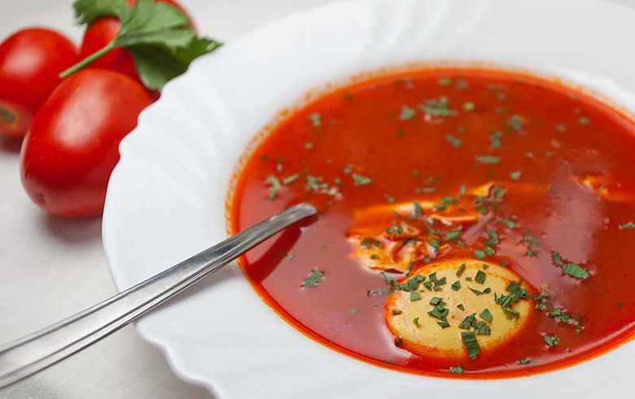

Ваљушци (насуво са кромпиром)
Потребни састојци:
- 400g брашна;
- Једно јаје;
- Кашичица соли;
- 200ml млаке воде;
- 3 већа кромпира;
- 2 лука;
- Кашичица алеве паприке;
- Кашика масти.
- Припрема:
- У чинију ставити брашно, со и јаје и помешати са водом. Мешати док се састојци сједине. Тесто развити, и исећи га на коцкице. Кромпир исећи на коцкице и ставити у слану воду да се скува. Исечено тесто такође ставити у посољену кључалу воду, и извадити када тесто исплива на површину. Лук ситно исећи, и пропржити на масти. Када се лук испржи у њега ставити кашичицу алеве паприке. Кромпир још мало уститнити и помешати га са луком и ваљушцима. Препорука: јело послужити уз кисели купус.
Пилећи паприкаш
Потребни састојци:
- Једно пиле;
- 1kg кромпира;
- Два лука;
- Кашика масти;
- Једна кашичица алеве паприке;
- Једна кашичица соли;
- Зачин Ц по окусу;
- Першунов лист;
- Мало млевеног бибера.
- Припрема:
- Очишћено пиле исећи на комаде. Пропржити ситно исецкан црни лук, додати месо, осолити и додати чашу воде. Динстати уз повремено доливање воде. После 10-15 минута ставити кашичицу алеве паприке, ставити исецкан кромпир и долити воде колико је потребно. Кувати око један сат. Остале зачине ставити при крају кувања и јело је готово.
Парадајз чорба
Потребни састојци:
- 1l сока од парадајза;
- 1l воде;
- 1 црни лук;
- 1 шаргарепа;
- 1 першун;
- Зачин Ц;
- Бибер;
- Со;
- Шећер;
- 1 ловоров лист;
- Шољица пиринча.
- Припрема:
- У шерпу сипати сок од парадајза и воду, главицу лука, шаргарепу и першун и ставити да се кува пола сата. Када прође пола сата ставити пиринач, шећер и зачине по укусу. После тога кувати још 15 минута.
Кувано месо са сосом од парадајза/мирођије/вишања

Сос од парадајза
Потребни састојци:
- Две кашике брашна;
- Кашика масти;
- Со;
- Шећер;
- Сок од парадајза.
- Припрема:
- Брашно пропржити на мало масти 2-3 минута. Залити соком од парадајза са мало воде, додати со и мало шећера по укусу и кувати 5-6 минута. Сос послужити уз кувано месо.

Сос од мирођије
Потребни састојци:
- Две кашике брашна;
- Кашика масти;
- Со;
- Шећер;
- Кашика сецкане мирођије.
- Припрема:
- Брашно пропржити на мало масти 2-3 минута. Ставити кашику свеже исецкане мирођије, и залити хладном водом. Кувати 10-15 миута, ставити мало соли, шећера и мало сирћета по укусу. Сос послужити уз кувано месо.

Сос од вишања
Потребни састојци:
- Две кашике брашна;
- Кашика масти;
- Со;
- Шећер;
- Једна шоља очишћених вишања.
- Припрема:
- Брашно пропржити на мало масти 2-3 минута. У то убацити шољу очишћених вишања и мало воде. Кувати 10-15 минута, ставити мало соли и шећера. Сос послужити уз кувано месо.